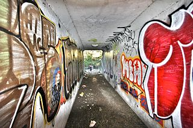
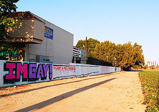

NORTH AMERICA
GOVERNMENT RESPONSES
UNITED STATES
Tracker Databases
Graffiti databases have increased in the past decade because they allow vandalism incidents to be fully documented against an offender and help the police and prosecution charge and prosecute offenders for multiple counts of vandalism. They also provide law enforcement the ability to rapidly search for an offender’s moniker or tag in a simple, effective, and comprehensive way. These systems can also help track costs of damage to city to help allocate an anti-graffiti budget. The theory is that when an offender is caught putting up graffiti, they are not just charged with one count of vandalism; they can be held accountable for all of the other damage for which they are responsible. This has two main benefits for law enforcement. One, it sends a signal to the offenders that their vandalism is being tracked. Two, a city can seek restitution from offenders for all of the damage that they have committed, not merely a single incident. These systems give law enforcement personnel real-time, street-level intelligence that allows them to not only focus on the worst graffiti offenders and their damage, but also to monitor potential gang violence that is associated with the graffiti.
Gang Injunctions
Many restrictions of civil gang injunctions are designed to help address and protect the physical environment and limit graffiti. Provisions of gang injunctions include things such as restricting the possession of marker pens, spray paint cans, or other sharp objects capable of defacing private or public property; spray painting, or marking with marker pens, scratching, applying stickers, or otherwise applying graffiti on any public or private property, including, but not limited to the street, alley, residences, block walls, and fences, vehicles and/or any other real or personal property. Some injunctions contain wording that restricts damaging or vandalizing the property of another, both public and private property, including, but limited to any vehicle, light fixture, door, fence, wall, gate, window, building, street sign, utility box, telephone box, trees, or power pole.
Hotlines and Reward Programs
To help address many of these issues, many local jurisdictions have set up graffiti abatement hotlines, where citizens can call in and report vandalism and have it removed. San Diego’s hotline receives more than 5,000 calls per year, in addition to reporting the graffiti, callers can learn more about prevention. One of the complaints about these hotlines is the response time; there is often a lag time between a property owner calling about the graffiti and its removal. The length of delay should be a consideration for any jurisdiction planning on operating a hotline. Local jurisdictions must convince the callers that their complaint of vandalism will be a priority and cleaned off right away. If the jurisdiction does not have the resources to respond to complaints in a timely manner, the value of the hotline diminishes. Crews must be able to respond to individual service calls made to the graffiti hotline as well as focus on cleanup near schools, parks, and major intersections and transit routes to have the biggest impact. Some cities offer a reward for information leading to the arrest and prosecution of suspects for tagging or graffiti related vandalism. The amount of the reward is based on the information provided, and the action taken.
Search Warrants
When the police use search warrants in connection with a vandalism investigation they are often seeking judicial approval to look for items such as cans of spray paint and nozzles from other kinds of aerosol sprays, etching tools, or other sharp or pointed objects used to etch or scratch glass and other hard surfaces, such as permanent marking pens and markers or paint sticks; evidence of membership or affiliation with any gang or tagging crew, paraphernalia to include any reference to "(tagger’s name)," and any drawings, writings, objects, or graffiti depicting taggers’ names, initials, logos, monikers, slogans, or mention of tagging crew membership; any newspaper clippings relating details of or referring to any graffiti crime.